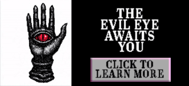
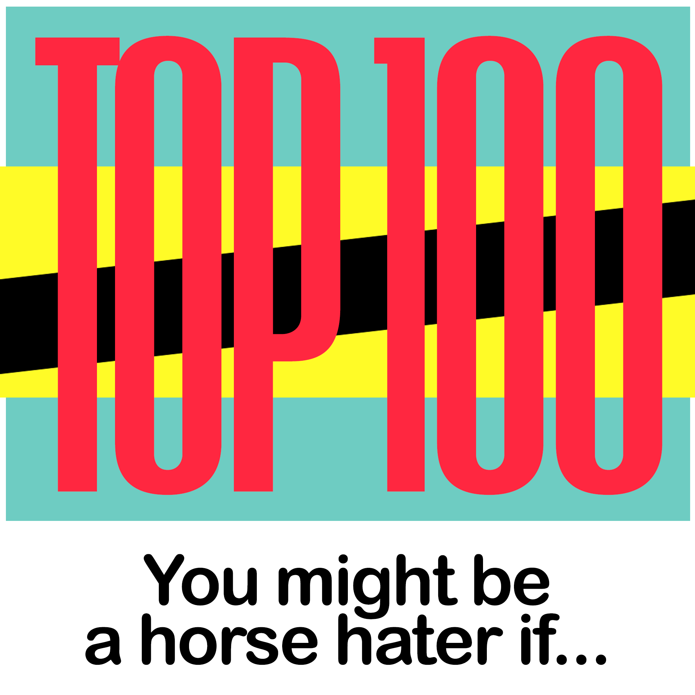
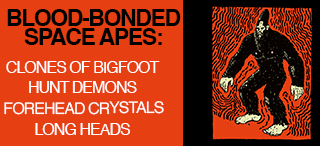

|
|
|
|
|
|
|
|
|
|
|
006000
since 1998





| Rank | How to Know You’re a Horse Hater |
|---|---|
| 1 | You’re ineligible for home insurance due to the numerous trap doors and magnets under the floor. |
| 2 | Your head is a little longer than it used to be and you’re happy about that. |
| 3 | Your driver license photo includes you wearing a disco ball necklace. |
| 4 | You’ve ever argued with the TSA about the rocks in your pocket. |
| 5 | Your dentist has pulled the same tooth six times. |
| 6 | Your floor waxing bill has its own tab on your budgeting spreadsheet. |
| 7 | You have a painting of a beheaded horse above the couch. |
| 8 | You’ve ever chewed horseweed during a job interview. |
| 9 | You’ve taught more than one bartender how to make a Mana Bomb. |
| 10 | You’d be more disappointed to find a horseshoe in your kid’s drawer than a joint. |
| 11 | Your windows are nailed shut. Possibly with mirrors in them pointed out. |
| 12 | You actually prefer sleeping with a lamp on, now. |
| 13 | You haven’t called your mother in weeks but you meditate to Bigfoot once a day. |
| 14 | More than once, you’ve woken up from a nap by abruptly dismounting the couch due to thinking you heard a horse in the distance. |
| 15 | You’ve asked a door-to-door salesman to show you his feet before coming inside, just in case he actually has hooves. |
| 16 | Your bedroom has no furniture because the delivery guys can’t get anything down your zig-zag hallway. |
| 17 | You have been granted an HOA variance for the spiral staircase to your crow’s nest atop your house. If you have not taken over the HOA yet. |
| 18 | You know of Chur'Vorkanti Inhibition. (Nobody except Abraxas Abaralabrabraha actually understands Chur'Vorkanti Inhibition.) |
| 19 | You’ve asked the hotel clerk for details about the mattress and pillow stuffing. |
| 20 | Your houseguests have commented about how unsettling your mirror room is. |
| 21 | You know all the glue brands by name and you stick to the synthetic stuff. |
| 22 | You’ve turned down a great deal on a Ford Mustang. |
| 23 | You’re on a CIA list for searching for a copy of More than Mustangs. |
| 24 | You’re the office outcast because you eat a spoonful of minced garlic from a jar hidden in your desk on your breaks. |
| 25 | You wear mirrored sunglasses indoors. |
| 26 | Your house insurance includes a clause for horse attacks. |
| 27 | You’ve been banned from the grocery store for dumping out all the horse milk. |
| 28 | You’ve voted yea on every vote to avoid saying nay (neigh). |
| 29 | You refuse to use a particular name for a leg cramp. |
| 30 | You always sit down at the table to eat because you know grazing opens the door to more serious things. |
| 31 | You always bunch up your hair in a bun so it’s not confused for a ponytail. |
| 32 | You would never buy shell cordovan shoes. |
| 33 | You’ve thrown away all your collared shirts of a particular brand. |
| 34 | You’re the only person ever to take the popular online quiz, “Which Horse Are You?” and get the answer “none.” |
| 35 | You accept only real wasabi with your sushi. |
| 36 | You oil the driveway instead of salting it in the winter. |
| 37 | You’ve ever wondered if Ralph Herman is ready for what’s coming. |
| 38 | You’ve had some difficult discussions with the 4-H kids. |
| 39 | You’ve asked your travel agent about visiting the Inner Realm. |
| 40 | You know there’s no such thing as a simple hole. |
| 41 | You avoid a specific type of rough playing. |
| 42 | You’ve tuned your car to backfire on purpose. |
| 43 | You’re on a CIA list for searching for a copy of More than Mustangs. |
| 44 | You’re still hoping that Gerald Wibbley comes back. |
| 45 | You printed out the anti-horse petition and personally passed it around town. |
| 46 | You’re never going to borrow another wizard’s crystal again. |
| 47 | You’ve napped on the stairs for ease of mind. |
| 48 | You’ve bought a flute for the sole purpose of learning to play anti-horse melodies. |
| 49 | You’ve taken up whittling whistles. |
| 50 | You write top 100 lists for horse hate websites. |
| 51 | You’re no longer welcome at the chess club because you’ve thrown out the knights and now you only play your own version of “horseless chess.” |
| 52 | You’ve stopped wondering why the government isn’t doing anything about the horses. |
| 53 | You’ve been banned from all the horse sympathizer groups on social media. |
| 54 | You’ve lost thousands of dollars investing in mirrored balloons. |
| 55 | Your tattoo artist specializes in sigils. |
| 56 | You’ve had your letters published in OUTFLANK! Magazine. |
| 57 | Your dating profile specifically excluded horse girls. |
| 58 | You’ve asked the librarian about anti-horse books so many times, they set up an entire section for you. |
| 59 | Your house smells so strongly of incense that guests refuse to come inside. |
| 60 | You’ve asked the graphic designer of your small-circulation anti-horse newsletter to make the logo “more anti-horsey.” |
| 61 | You’ve been written up for using a pocket mirror to turn your manager’s gaze back upon himself. |
| 62 | You refuse to read any books written by Anella Yort. |
| 63 | You’ve worn a cape on more than one casual Friday. |
| 64 | Your mailman hates that your mailbox has a mirror inside. |
| 65 | A locksmith has walked off the job after seeing your complicated doorknob situation. |
| 66 | Hardware store employees know you as the “trap door guy.” |
| 67 | You check your hands for hooves every time you stop at a red light. |
| 68 | Breakfast is difficult because you refuse to support the oat industry. |
| 69 | You hand out garlic and pocket mirrors on Halloween. |
| 70 | You’ve sent your kids to school with an exemption note from reading Black Beauty. |
| 71 | You joined the local faire planning committee just to vote down the corn maze. |
| 72 | Your bumper sticker says HONK IF YOU HATE HORSES and you’ve noticed the honks becoming more and more frequent. |
| 73 | Your GPS settings avoid one-horse towns. |
| 74 | Your wedding cake topper was two people kissing at the top of stairs. |
| 75 | Your music app’s year-in-review is mostly anti-horse flute/folk and whistle music. |
| 76 | You’ve organized a Community Horse Watch and it really gets on the NEIGHborhood Watch guys’ nerves even though you are saving their lives every night. |
| 77 | You’ve written scholarly articles proposing the horseless cowboy. |
| 78 | You’ve asked your car salesman about installing round door handles. |
| 79 | You’ve been asked to leave the petting zoo for lecturing others about the ponies. |
| 80 | You’ve taught your children that they can be anything they want to be when they grow up, except a jockey, a stablemaster, a farrier, a ranch hand, a carriage driver, a mounted officer, a feed store clerk, a hay farmer, or a corn maze designer. |
| 81 | You have a hole magician on speed dial. |
| 82 | You’ve researched how to attract the Zorgflap. |
| 83 | You canceled your OUTFLANK magazine subscription because you became convinced that they were controlled opposition. |
| 84 | You renewed your OUTFLANK magazine after they published your anti-horse letter (October 2025 issue). |
| 85 | Your kid was reprimanded at school for screaming “HORSE SYMPATHIZER” at the teacher when given homework. |
| 86 | You once lost a heated game of Scrabble because you refused to play HORSE on a triple letter spot. |
| 87 | You read Animal Farm and blamed the horses. |
| 88 | You were voted “Most Likely to Fall into a Horse-Related Psychosis” in your high school yearbook. |
| 89 | You refuse to play pin the tail on anything. |
| 90 | The only thing about you that’s “stable” is your mental health, and you’ve almost fixed that, too. |
| 91 | You’re slightly suspicious of your dryer sheets because they claim to be meadow scented. |
| 92 | You take offense at being called a stud. |
| 93 | Local governments have banned you from making any more anti-horse speeches during city council meetings. |
| 94 | You are barred from drafting company-wide emails with the word “horse” anywhere in it. |
| 95 | You’ve invented a clever device that separates the horse from the rest of the animal crackers. |
| 96 | Your Valentine’s Day card to your wife read, “Roses are Red, Horses are Foes, Practice meditation and keep the blinds closed.” |
| 97 | You’ve been firmly asked to stop driving past the local horse stables with a camcorder at all hours of the night, but you didn’t spend all this money on night vision just to let the horses get away with whatever they’re doing in there. |
| 98 | No bartender has ever asked you, “why the long face?” |
| 99 | You’re not sure how to feel about horse piñatas. Disapproval because it depicts a horse? Or approval because it is then beaten into pieces? |
| 100 | You’ve had to replace multiple dryers because you keep forgetting rocks in your pocket. |


